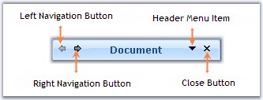
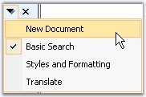

Setting Visibility of the ToolBar Items
The header section by default has four toolbar items. Left and right navigating buttons at the top left corner of the TaskPane Header and DropDownMenu and Close Button at the top right corner of the TaskPane Header.

Figure 1260: Header Illustrated with Left and Right Toolbar Items
· HeaderLeftToolbar.Items[0] - Indicates Left navigating button, lets you navigate to the previous page.
· HeaderLeftToolbar.Items[1] - Indicates Right navigating button, lets you navigate to the next page.
· HeaderRightToolbar.Items[0] - Indicates Header Menu Item which lists all the Task pages when clicked at run time.

Figure 1261: TaskPages list displayed on clicking DropDownMenu Item
· HeaderRightToolbar.Items[1] - Indicates Close button, using which we can close the Task Pane.
The visibility of these items can be controlled using the below code snippets.
|
[C#]
//Setting the visibility of the left navigating button at the top left corner this.xpTaskPane1.HeaderLeftToolbar.Items[0].Visible = true; //Setting the visibility of the Right navigating button at the top left corner this.xpTaskPane1.HeaderLeftToolbar.Items[1].Visible = true;
//Setting the visibility of the header menu item at the top right corner this.xpTaskPane1.HeaderRightToolbar.Items[0].Visible = true; //Setting the visibility of the close button item at the top right corner this.xpTaskPane1.HeaderRightToolbar.Items[1].Visible = true; |
|
[VB.NET]
'Setting the visibility of the left navigating button at the top left corner Me.xpTaskPane1.HeaderLeftToolbar.Items[0].Visible = True 'Setting the visibility of the Right navigating button at the top left corner Me.xpTaskPane1.HeaderLeftToolbar.Items[1].Visible = True
'Setting the visibility of the header menu item at the top right corner Me.xpTaskPane1.HeaderRightToolbar.Items[0].Visible = True 'Setting the visibility of the close button item at the top right corner Me.xpTaskPane1.HeaderRightToolbar.Items[1].Visible = True |
Images for Toolbar items
We can change the existing image for the toolbar items using the below code snippets.
|
[C#]
//Setting Image for the right navigating button this.xpTaskPane1.HeaderLeftToolbar.Items[1].ImageList = this.imageList1; this.xpTaskPane1.HeaderLeftToolbar.Items[1].ImageIndex = 0;
//Setting Image for the left navigating button this.xpTaskPane1.HeaderLeftToolbar.Items[0].ImageList = this.imageList1; this.xpTaskPane1.HeaderLeftToolbar.Items[0].ImageIndex = 1; |
|
[VB.NET]
'Setting Image for the right navigating button Me.xpTaskPane1.HeaderLeftToolbar.Items[1].ImageList = Me.imageList1 Me.xpTaskPane1.HeaderLeftToolbar.Items[1].ImageIndex = 0
'Setting Image for the left navigating button Me.xpTaskPane1.HeaderLeftToolbar.Items[0].ImageList = Me.imageList1 Me.xpTaskPane1.HeaderLeftToolbar.Items[0].ImageIndex = 1 |
Figure 1262: Images set for Navigation Buttons using HeaderLeftToolbar Property
Customizing Header Menu Item Image
The Header Menu Item image can be changed through ImageIndex property which lists a set of pre-defined images, else set the Image property to the custom image you want to set for the dropdown image.
|
Property |
Description |
|
HeaderMenuItem.ImageIndex |
Specifies index of the image to be displayed in the DropDownMenu item. |
|
HeaderMenuItem.Image |
Sets the image to be displayed in DropDownMenu item. |
|
[C#]
//Setting Image for the DropDownMenu item this.xpTaskPane1.HeaderMenuItem.ImageIndex = 1; |
|
[VB.NET]
'Setting Image for the DropDownMenu item Me.xpTaskPane1.HeaderMenuItem.ImageIndex = 1 |
Figure 1263: Default DropDownMenu Image Changed to "Arrow" Icon